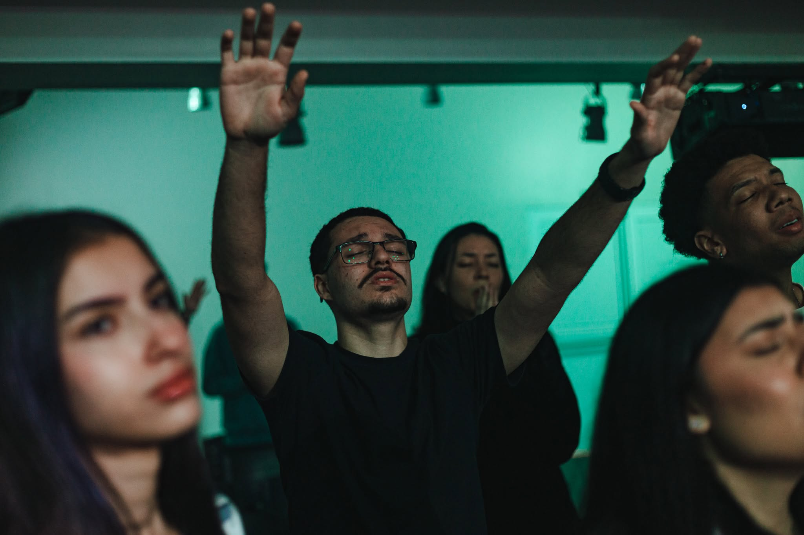

Terravis
Site para um trabalho da faculdade: usar um satélite no agronegócio — previsões do estado da vegetação para ajudar quem trabalha no campo a decidir se está bom para plantar.

Da rotina administrativa ao código: estou construindo minha trajetória em Engenharia de Software um projeto de cada vez.
Meu nome é Gabriel Brito Braga, sou estudante de Engenharia de Software e trabalho como assistente administrativo em uma empresa de crédito imobiliário. Essa rotina me ensinou organização, responsabilidade e a importância de cada detalhe — habilidades que levo para o mundo da programação.
Na graduação, descobri minha paixão por desenvolvimento através de Python e JavaScript. Cada trabalho acadêmico é uma chance de transformar teoria em algo real — e este portfólio é a prova dessa evolução.
Fora das telas, sou músico e toco na banda da minha igreja. A música me ensinou a ouvir o conjunto antes da própria parte — e a minha fé cristã é a base de tudo: o que dá sentido ao que eu construo, tanto no palco quanto no código.
Python, JavaScript — lógica, estruturas de dados e automação nos trabalhos da faculdade.
HTML, CSS — estrutura semântica e estilo: a base deste portfólio que você está vendo.
DOM, eventos, Git — interatividade em páginas web e versionamento de código.
Site para um trabalho da faculdade: usar um satélite no agronegócio — previsões do estado da vegetação para ajudar quem trabalha no campo a decidir se está bom para plantar.
Este próprio site: landing page responsiva com animações de scroll e design editorial.
Site de divulgação que desenvolvi como peça de propaganda para o projeto da Jovi.
Rotinas administrativas e apoio à gestão de contratos. Organização de documentos, atendimento e processos — experiência que desenvolve disciplina e atenção aos detalhes, agora aplicadas à programação.
Formação com foco em desenvolvimento, lógica e arquitetura. Projetos acadêmicos em Python e JavaScript — incluindo este portfólio como exercício de front-end e comunicação com IA.